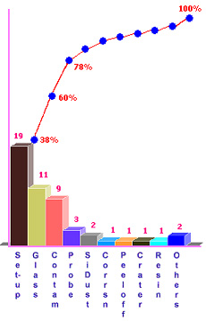

|
Pareto
Chart
One of the
first things new engineers are asked to do is
to learn to
prioritize tasks.
They are made aware early on to distinguish between the
'vital few' and the 'trivial many', which means that one has to focus on
the few things that really matter, and not spend resources on the many
others that have little or no impact.
There was even a mathematical
expression for it, known as the
80/20 rule,
which states that 80% of all problem occurrences are due to only 20% of
the types of problems encountered. Another variant of this rule states that for any
problem, 80% of its occurrences are due to only 20% of all the causes.
Thus, if one were to address
a problem, the 20% of the causes that results in 80% of the problem (the
'vital few', so to speak) must first be identified and eliminated,
before the rest are acted upon, if still necessary. The Pareto Chart is
a very simple but effective tool for prioritizing problem causes, which
is why it is widely used for problem-solving in the manufacturing
industry.
The
Pareto Chart
is basically a
descending bar graph that shows the frequencies of occurrences or
relative sizes of either: 1) the various categories of all
problems encountered, in order to determine which of the existing
problems occur most frequently; or 2) the various causes of a particular
problem, in order to determine which of the causes of a particular
problem arise most frequently. The problem categories or causes
are shown on the x-axis of the bar graph.
Aside from
its main bar graph, the Pareto Chart may also include a line graph that
indicates the cumulative percentage of occurrences at each bar of the
bar graph. This line graph, referred to as the
'cumulative
percentage line',
is used to determine which of the bars belong to the 'vital few' and
which ones are relegated to the 'trivial many.'
Figure 1 shows an
example of a Pareto Chart.
Bars that
belong to the former group are those that account for bulk of the
problems or problem causes encountered. The last point of the line
graph corresponds to the last bar of the bar graph (usually the 'Others'
bar), and should correspond to 100% of the cumulative occurrences.
A pareto
chart offers the following
benefits:
1) it helps the team focus on the problems or causes of problems that
have the greatest impact; 2) it displays the relative significance of
problems or problem causes in a simple, quick-to-interpret, visual
format; and 3) it can be used repeatedly in cycles to produce continuous
improvements systematically (for each succeeding cycle, the major pareto
bars are actually minor bars in the previous cycle).
To
construct
a pareto chart, the following
steps
are
recommended:
1)
choose a problem that needs to be addressed;
2)
identify the causes of the problem based on existing data and through
brainstorming;
3)
decide on how these problem causes will be monitored for the data
collection for the pareto chart, e.g., frequency of occurrence?, cost?,
etc.;
4)
define the duration and time frame of the data collection - it should be
long enough to provide meaningful information about the real situation;
5)
conduct the data gathering according to the defined time frame, e.g.,
monitor the frequency of occurrence or cost impact of each problem cause
encountered, ensuring that causes not identified earlier for monitoring
must still be counted in a catch-all bin ('Others' category);
6)
tabulate the problem causes in order of decreasing frequency, and assign
a column each for: a) the frequency of occurrence (or cost impact); b)
the percentage share of the cause; and c) the cumulative percentage
corresponding to each problem cause (see
Table 1);
7)
construct the pareto chart using the tabulated data and following the
pareto chart format discussed earlier (see
Figure 1);
8)
interpret the pareto chart and select the 'vital few' that need to be
addressed immediately.
Table 1.
Example of a Tabulation of Causes of Ball Bond Lifting
for use in a
Pareto Chart
|
Ball Lifting Cause |
Frequency |
Percent (%) |
Cum Pct (%) |
|
Bonder
Set-up Issues |
19 |
38% |
38% |
|
Unetched
Glass on Bond Pad |
11 |
22% |
60% |
|
Foreign
Contam on Bond Pad |
9 |
18% |
78% |
|
Excessive Probe Damage |
3 |
6% |
84% |
|
Silicon
Dust on Bond Pad |
2 |
4% |
88% |
|
Corrosion |
1 |
2% |
90% |
|
Bond Pad
Peel-off |
1 |
2% |
92% |
|
Cratering |
1 |
2% |
94% |
|
Resin
Bleed-out |
1 |
2% |
96% |
|
Others |
2 |
4% |
100% |
|
Total |
50 |
100% |
- |

Figure 1.
The Pareto Chart Corresponding to Table 1
The Pareto
Chart in Figure 1 clearly shows that the greatest contributors to the
ball bond lifting problems of the engineer who undertook the data
collection are bonder set-up issues, unetched glass on bond pads, and
foreign contaminants on bond pads. Thus, the engineer has to focus on
these causes to reduce their ball lifting occurrences by as much as 78%.
See Also:
Ishikawa Diagram
HOME
Copyright
©
2004-2005
EESemi.com.
All Rights Reserved.
|